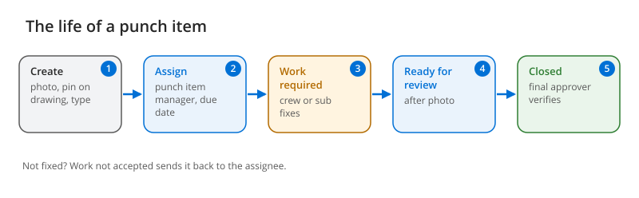

Working the punch list
In one sentence: each punch item is a location, a description, a photo, a responsible party and a due date, and it closes only when someone verifies the fix.

The roles
- Punch item manager: oversees the item, assigns it and forwards it for final approval.
- Assignees: do the work and mark it ready for review.
- Final approver: has the authority to close the item; often its creator.
Statuses track each step, for example work required, ready for review, work not accepted, ready to close and closed.
On a Caltrans job
The RE's punch list arrives as a list or a walk-through. Practical use:
- Enter each item in Procore from the phone during the walk, with a photo and a pin on the drawing.
- Assign it to your crew or the responsible sub with a due date.
- The crew fixes it and adds an "after" photo.
- Your superintendent verifies and closes; you report back to the RE in the format they want.
Items can be created offline in the app and sync later.
Punch list types
Create types (electrical, civil, signing and striping, landscaping) so you can sort by trade and send each sub only its items.
PM notes
Start a running "pre-punch" list a few weeks before completion. The RE's punch list is shorter when you've walked the job first. See Caltrans acceptance testing and the punch list.
In Procore's own help
What is the Punch List workflow. Procore's help pages are the reference for how each screen works today.
Common mistakes
- Items without photos or locations.
- Closing items on the crew's word without verification.
- Waiting for the RE's walk to start looking.